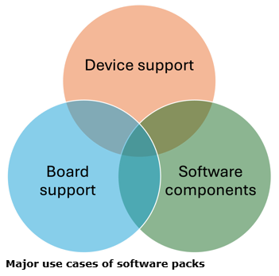
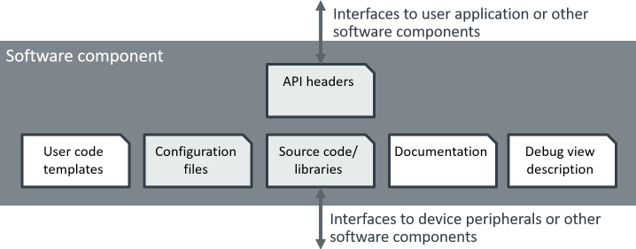
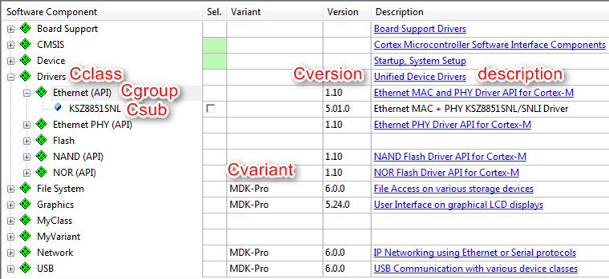
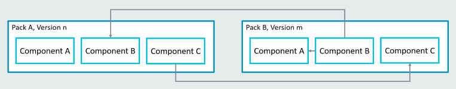
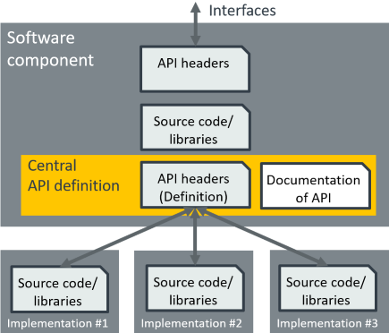
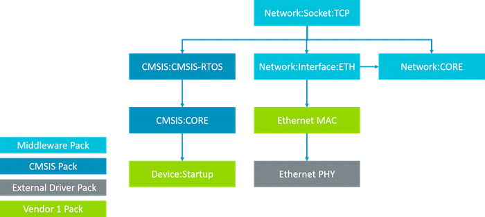
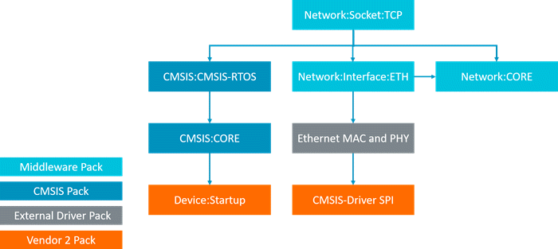
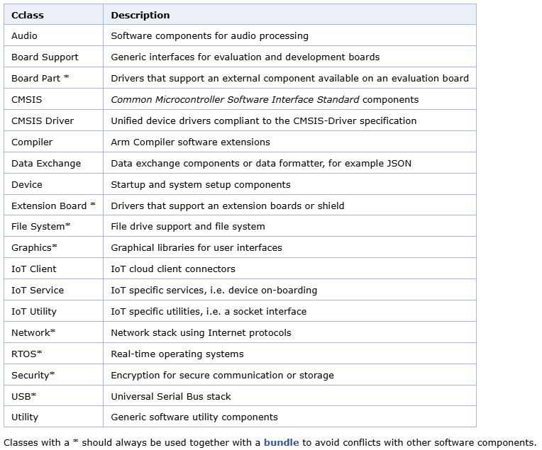
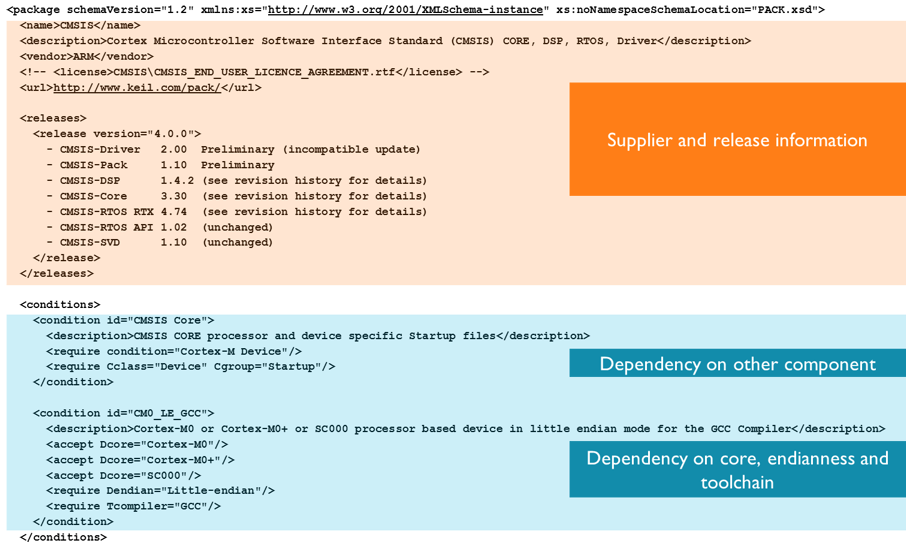
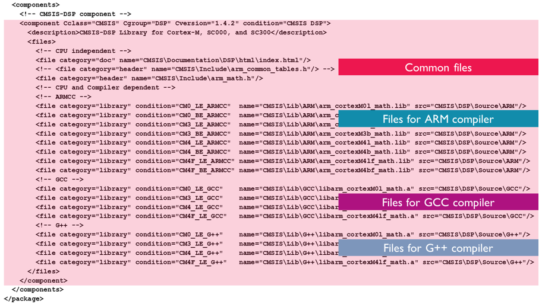

制作keil pack安装包¶
概述¶
CMSIS（通用微控制器软件接口标准， Common Microcontroller Software Interface Standard）为处理器及其外设提供一致的设备支持和简单的软件接口，简化了软件重用，减少了微控制器开发人员的学习曲线，并缩短了新设备的上市时间。ARM 推出 CMSIS 软件包意在统一各大芯片厂商的外设驱动，内核驱动， DSP 数字信号处理， 下载器和各个主流RTOS 的 API 统一。 几年下来，各个厂商还是一直是各自为战。
2021年的时候，ARM将Pack单独从CMSIS中拎出来，搞了个 Open-CMSIS-Pack 项目，所以从 CMSIS_5.9 后，Pack就有了单独的项目地址。该项目目前由 Linaro 与 Arm、NXP 和 ST 合作，作为孵化项目进行托管和管理。
Open-CMSIS-Pack 项目提供了工具、方法和基础设施，用于集成和管理软件组件，并改进嵌入式和 IoT 项目中的代码重用。
长期以来，组件重用的软件兼容性一直是微控制器领域的一个挑战，尤其是对于物联网，与 PC 或数据中心相比，物联网在硬件级别更加多样化。Open-CMSIS-Pack 消除了这种复杂性，为软件组件打包和用于验证、分发、集成、管理和维护的相关基础工具提供了标准。
什么是CMSIS-Packs¶
CMSIS-Pack 是一种支持 11,000 多个微控制器的封装技术。Packs 为软件组件、器件参数和评估板支持提供了一种交付机制。基于 XML 的包描述 （PDSC） 文件描述软件包 （文件集合） 的内容，其中包括：
- 源代码、头文件和软件库
- 文档和源代码模板
- 设备参数以及启动代码和编程算法
- 示例项目
完整的文件集合以及 PDSC 文件以 ZIP 格式（重命名为 *.pack）提供。PDSC 文件专为软件开发环境而设计，用于描述此类包文件中所提供文件的用户信息，此信息还可用于在网站上显示（请参阅发布 CMSIS-Pack）。
CMSIS-Pack 系统解决了几个问题：
- 它提供与软件组件相关的文件的元数据。可以识别属于软件组件的所有文件，并保留有关原始提供者的信息。
- 它支持一致的软件组件升级，并识别可能是用户应用程序一部分的不兼容配置文件。
- 软件组件提供程序可以指定接口以及与其他软件组件的关系。
- 软件组件的元数据可以包括工具链、设备和处理器的依赖关系信息，从而简化与应用程序的集成。
安装软件包后，所有包含的软件组件都可供开发工具使用。软件组件是源模块、头文件和配置文件以及库的集合。包含软件组件的包还可以包括示例和用户代码模板。
软件包使用案例¶
软件包可用于提供：
- 设备支持：所谓的设备系列包 （DFP） 包含微控制器设备系列的 CMSIS 系统/启动文件、驱动程序和闪存算法。
- 板支持：板级支持包 （BSP） 包含特定开发板的文档、原理图和驱动程序。
- 软件组件：纯软件包可以包含以下各项的源代码、库和文档：
- 用于公共可用性的中间件堆栈。
- 用于在公司和/或工程组内分发的内部软件。
所有这些包装类型都可以额外包含：
- 示例项目
- 代码模板
- 参考应用程序
如下图所示，一个软件包可以同时处理多个用例！PDSC 文件中的 XML 元素确定用例。CMSIS 本身以各种软件包（CORE、DSP 库、RTOS 实现等）分发，并由 Arm 提供。

什么是 CMSIS-Toolbox¶
CMSIS-Toolbox 提供命令行工具，用于使用 CMSIS-Pack 创建和构建嵌入式应用程序。它支持多种编译工具。它还可以帮助您使用 CMSIS-Pack 格式创建、维护和分发软件包。详见 CMSIS-Toolbox 文档。
技术背景¶
CMSIS-Pack 格式用于交付软件包，旨在根据未来需求进行扩展。它提供了一个管理流程，并支持独立于工具的分发，用于：
- 针对特定设备的工具链和软件应用程序的设备支持：
- 有关处理器及其功能的信息。
- C 和汇编文件，用于器件启动和访问内存映射外设寄存器。
- 有关器件系列和特定器件的参数、技术信息和数据表。
- 设备描述和可用外围设备。
- 内部和外部 RAM 和 ROM 地址范围的内存布局。
- 用于对器件进行编程的 Flash 算法。
- 调试和跟踪配置以及系统视图描述文件，用于显示存储器映射外设寄存器的器件。
- 电路板支持原型设计阶段的快速开发：
- 有关开发板及其功能的信息。
- 有关电路板、安装的微控制器和外围设备的参数、技术信息和数据表。
- 板载外围设备的驱动程序。
- 软件组件简化了软件的重用和第三方软件的管理。它们包含：
- 源模块、头文件和配置文件以及库的集合。
- 软件文档，包括功能和 API。
- 应用程序编程接口为属于另一个软件包的软件组件指定一个或多个 API。
- /package/examples 元素可用作类似应用程序的参考和起点。它们包含：
- 完全定义的应用程序项目，可在指定的生成和调试环境中开箱即用。
- 有关示例目的、如何构建、配置和执行应用程序的文档。
- 代码模板有助于更好地理解软件组件的基本概念，并为用户实现其应用程序提供一个良好的起点。
软件组件¶
软件组件封装了一组相关功能。软件组件可以包含 C/C++ 源文件、目标代码、汇编程序文件、头文件或库。软件组件的接口应使用 API 进行定义，以使其在设计时可被其他兼容组件替代。此外，CMSIS 软件组件应包含软件组件的文档。它们可能会提供用户代码模板，为应用程序开发人员提供起点，并且可以为调试器提供可选的调试视图说明。
CMSIS 软件组件也可以涉及其他软件组件的多个接口。这也可以是设备外设的硬件抽象层。
配置文件包含软件组件的应用程序特定参数。这些文件通常复制到用户项目工作区;所有其他文件都不会被用户修改，并且可以保留在单独的位置，这样可以避免项目工作空间被许多源文件污染，这些源文件应被应用程序程序员视为“黑盒”元素。

组件分类¶
一个组件会列出属于它并且对项目相关的文件。这个组件本身或每个单独的文件可能都会引用一个必须为真的条件；如果该条件为假，则该组件或文件在这个给定的情境下不适用。
每个软件组件必须具备以下用于识别该组件的属性：
- 组件类 （Cclass）：作为顶级组件名称的组件类，例如 CMSIS、设备、文件系统
- 组件组 （Cgroup）：组件组名称，例如 CMSIS：RTOS、Device：Startup、File System：CORE
- 组件版本（Cversion）：软件组件的版本号。
可选地，软件组件可能具有其他属性：
- 组件子组 （Csub）：当一个组件的多个兼容实现可用时使用的组件子组。例如：CMSIS：RTOS：MyRTOS， Device：Driver USBD：Full-speed
- 组件变量 （Cvariant）：当同一实现具有多个顶级配置（如 debug 和 release）时，通常使用软件组件的变体。
- 组件供应商 （Cvendor）：软件组件的供应商。
- Cbundle：允许将多个软件组件组合成一个软件捆绑包。例如，如果使用网络堆栈，则所有接口都必须与该组件匹配。
- Instances：允许部署软件组件的多个实例。每个实例都可以有一个单独的配置文件。
Cclass、Cgroup、Csub、Cvariant 和 Cversion 属性与包指定的供应商一起使用，以标识组件。组件供应商必须确保 Cclass、Cgroup、Csub 和 Cversion 组合是唯一的，并且不会被同一 Pack 中的多个组件使用。使用 /package/taxonomy 元素通告一组要供其他软件组件使用的属性。
如果多个相互依赖的组件（属于同一 Cclass）构成解决方案的一部分，则可以将它们分组到所谓的 bundle 中。
使用以下语法引用软件组件和 API：
<Vendor>::<Cclass>:<Cgroup>:<Csub>
Examples:
- ::CMSIS:RTOS (API) - the CMSIS-RTOS API.
- ARM::CMSIS:DSP - the CMSIS-DSP Library.
- ::File System:Drive:NOR - the NOR Flash Drive of a file system.
以下是在开发工具中显示软件组件的示例： 
软件组件文件¶
每个软件组件由一定数量的文件组成。每个文件至少具有以下属性：
- name：文件路径、文件名和文件扩展名，格式为 path/name.extension。文件路径相对于包的根目录。
- category：定义文件的用途。选择文件类别表中列出的预定义值。
可选地，每个文件都可以具有以下属性：
- attr：定义文件的特殊用途和处理。选择文件属性表中定义的预定义值。
- condition：输入条件的标识符（属性 ID）。如果条件解析为 true，则使用该元素。
- select：文件的简要说明和用途。当 attr 设置为 template 或 interface 时，需要 select 属性。当一个元件的多个模板文件具有相同的选择字符串时，它们将被视为单个可选择模板。这样，可以捆绑多个模板或接口文件。
- src：路径信息。路径是相对于包描述文件 （PDSC） 指定的。
- version：特定于文件的版本信息。这特别适用于复制到项目工作区的文件。在复制文件之前，版本检查可避免不必要的复制作。如果文件没有版本，则使用组件版本。
文件命名¶
最好唯一地命名软件组件文件。这对于复制到项目中的用户配置文件尤其重要。CMSIS-Pack 运行时环境将配置文件复制<Cclass>到目录结构中。例如，./RTE/BSP 存储 BSP 的所有用户可编辑文件<Cclass>。如果文件名不是唯一的，则可能会与该文件的其他软件组件发生冲突<Cclass>（例如，将配置文件命名为 user_config.h 时）。
推荐的配置文件命名如下：<vendor>_<unique_component>_config
示例
- MyVendor_MyBSP_config.h
- MyVendor_MyNetworkStack_config.h
Tip
请注意，如果您的软件组件包含配置文件中不同的配置文件，您还需要确保您的配置文件需要唯一命名和版本控制
参考¶
软件组件可以使用条件引用其他软件组件（在同一包中或其他包中）：

条件描述对以下内容的依赖关系：
- 特定设备
- 某个处理器
- 工具属性
- 存在其他组件（PCAK 内部或外部）
条件可用于确保系统中存在特定的软件组件，或者可以防止用户选择软件组件的非法组合。
条件用于定义 AND/OR 规则，这些规则使组件成为条件，因此仅在特定情况下可用，例如对于特定设备或处理器。条件还用于表示软件组件之间的依赖关系。
每个条件都有一个 id，该 id 在 PDSC 文件的范围内是唯一的。可以在组件、API、示例、文件和其他条件的 condition 属性中引用 id。在 accept、require 或 deny 元素中设置的所有属性都必须解析为 true，元素才能变为 true。在以下情况下，条件变为 true：
- 至少有一个 accept 元素为 true，并且
- 所有 require 元素都是 true，并且
- no deny 元素为 true。
如果条件在处理过程中解析为 false，则将忽略相应的元素。
要求¶
Packs 可以要求其他 Pack 可用（甚至可以要求提供 Pack 的特定版本）：
有三种不同的需求类型：
- packages 部分列出了已用于配置项目的 CMSIS Packs。这包括指定版本范围以确保兼容性。如果未提供版本，则使用最新安装的版本。如果尚未安装，将在解析配置之前安装最新的可用版本。
- compilers 部分指定了此示例支持的工具链。所需的编译器版本是使用 version 元素指定的。如果未指定编译器，则假定任何工具链都可以工作。
- languages 部分允许指定有关编程语言的要求，例如 C99 标准。如果未设置语言要求，则假定为 ANSI C。
中央 API 定义¶
CMSIS-Pack 系统允许共享 API 接口的头文件信息和文档的中央 API 定义。

这个 API 接口定义可确保在使用该接口的多个实现中使用时的一致性。API 接口定义可以单独分发，也可以作为使用此接口的软件组件的一部分分发。
例如，CMSIS-Driver 包包含各种硬件接口驱动程序，这些驱动程序都与 CMSIS-Driver API（在 CMSIS Pack 中发布）兼容。
清单头文件¶
通常，软件组件的行为或功能取决于应用程序中是否存在其他软件组件。例如，网络堆栈可以连接到以太网或串行 PPP （UART）。根据接口组件的存在，实现的行为可能会有所不同。
为了简化应用程序配置，文件 RTE_Components.h 在项目构建步骤之前生成。它包含所有选定组件的清单。对于每个选定的软件组件，它包含由组件元数据指定的 #define 语句。以下示例显示了一个 RTE_Components.h 文件：
/*
Auto generated Run-Time-Environment Component Configuration File
* Do not modify ! ***
*/
#ifndef RTE_COMPONENTS_H
#define RTE_COMPONENTS_H
/*
Define the Device Header File:
*/
#define CMSIS_device_header "stm32f10x.h"
#define RTE_Network_Interface_ETH_0 /* Network Interface ETH 0 */
#define RTE_Network_Socket_BSD /* Network Socket BSD */
#define RTE_Network_Socket_TCP /* Network Socket TCP */
#define RTE_Network_Socket_UDP /* Network Socket UDP */
#endif /* RTE_COMPONENTS_H */
在其他头文件中使用此信息来控制依赖于包含在其他软件组件中的功能。例如：
#include "RTE_Components.h"
#ifdef RTE_Network_Interface_ETH_0 // if component is included
#include "Net_Config_ETH_0.h" // add related configuration file
#endif
组合组件¶
使用软件组件时，您可以使用条件自动解决对其他组件的依赖关系。使用此选项可以以某种方式组合项目的组件，同时为另一个项目以不同的方式组合它们。在以下示例中，网络堆栈通过以太网传输数据。网络堆栈需要 MAC 和 PHY 来执行此作。从芯片供应商 A 处选择的器件，其中包含片上 MAC，因此只需要选择一个 PHY：
Example with internal MAC

您可以复制项目，例如从芯片供应商 B 选择不同的设备，并让运行时环境管理器进行组件交换。由于新器件没有片上 MAC，因此您需要选择不同的组件来满足网络堆栈的要求：
Example with external MAC and PHY

这大大减少了开发时间，因为开发人员不需要关心软件组件之间的正确依赖关系，而是可以专注于实现自己的应用程序代码。
Pack 约定¶
软件包是位于目录中的文件集合，这些文件使用标准 ZIP 文件格式存档在扩展名为 *.pack 的文件中。文件扩展名为 *.pdsc 的包描述文件 （PDSC） 包含元信息，用于描述基于 XML 的包的内容。PDSC 文件必须为：
- 包含在软件包中
- 位于存档的 base 文件夹中
- 符合软件包文件命名约定
Note
- 基本文件夹被定义为 zip 存档的根文件夹“./”，并且整个软件包必须仅包含一个 PDSC 文件。
- 未来的工具将支持这种情况：如果 PDSC 文件位于直接子目录中，则该子目录将成为基本文件夹。安装软件包时，就好像子目录不存在一样。位于根文件夹中的所有文件和目录都将被忽略，并且不会安装。
包文件名¶
软件包必须具有唯一的文件名。因此，它是由供应商、包名和版本以及文件扩展名 *.pack 构造的。
<vendor>.<name>.<version>.pack
<vendor>是软件包的供应商或供应商的名称。<name>是软件包的名称。供应商发布的所有包都必须具有唯一的包名称。<release version=“X.Y.Z”>指定软件包的版本号。.pack是标识软件包的文件扩展名。
Note
- XML 元素
<vendor>、<name>和version的属性`<release>在 PDSC 文件中指定。PDSC、Pack 文件名区分大小写，需要完全匹配。 <vendor>并且<name>不得包含空格。- PDSC 文件需要驻留在 Pack 的基文件夹中。所有文件引用都相对于 PDSC 文件的位置。
软件组件Cclasses¶
如果在 PDSC 文件中添加软件组件，则必须指定组件类 （CClass）、组件组 （Cgroup） 和组件的版本号 （Cversion）。有关更多信息，请参阅软件组件。
如果适用，请尝试将软件组件的 Cclass 映射到下面列出的以下预定义或已经建立的类之一。这些 Cclass 名称在 CMSIS 包中使用 taxonomy 元素预定义。

发布CMSIS-Pack¶
详见：发布CMSIS-Pack
包描述（*.pdsc）格式¶
Pack Description （*.pdsc） 格式使用标准 XML 注释，并在架构文件 PACK.xsd 中定义。软件组件通过软件包分发。软件包是一个 zip 文件，其中包含一个 Pack Description 文件，该文件描述与设备、处理器、工具链或其他软件组件的依赖关系。
软件包的描述性文本以及设备、组件和示例的文本信息是每个包描述 （*.pdsc） 文件的一部分。此外，还提供了有助于下载、更新和版本控制软件包的信息。*.pdsc 文件还包含软件包的完整版本历史记录，以及最重要更改的简要列表。
文件名约定¶
软件包必须具有唯一的文件名，该文件名使用以下格式：<vendor>.<name>.<version>.pack。
其中：
<vendor>：软件包的供应商或供应商的名称。<name>：软件包的名称。供应商有责任确保包名称唯一。<release version=\“X.Y.Z\”>：软件包的版本号。.pack：标识软件包的文件扩展名。
Tip
<vendor> 和 <name> 不得包含空格。
包描述（*.pdsc）属于此类软件包文件 （<vendor>.<name><version>.pack）与版本无关，格式为：<vendor>.<name>.PDSC。
其中：
<vendor>：软件包的供应商或供应商的名称。<name>：此 *.pdsc 文件描述的软件包的名称。.pack：标识软件包的文件扩展名。
Tip
<vendor> 和 <name> 不得包含空格。
软件包的文件名示例：
Arm 发布的 CMSIS 4.0 版软件包。
- ARM.CMSIS.4.0.0.pack：软件包的文件名。
- ARM.CMSIS.pdsc：包描述 （*.pdsc） 文件的文件名。
ST Microelectronics 发布的 Device Family Pack for STM32F4 1.0.0 版。
- ST.STM32F4xx_DFP.1.0.0.pack：软件包的文件名。
- ST.STM32F4xx.pdsc：包装描述 （*.pdsc） 文件的文件名。
Tip
所有元素都区分大小写，并且必须在所有位置拼写一致，即 PDSC 文件中的定义必须与 *.pdsc 和 *.pack 文件的文件名匹配。文件扩展名（*.pdsc 和 *.pack）必须为小写。
包架构¶
XML 模式文件 PACK.xsd 定义了 *.pdsc 文件中使用的部分。当前的 PACK.xsd 可以在 ARM.CMSIS 包中找到。
包描述 （*.pdsc） 格式使用分组元素进行结构化，并包含以下顶级元素：
<package>：描述与包相关的信息，如供应商、包名称、描述、版本。是根元素。<description>：软件包的简要说明，以及指向 Markdown 概述文档的可选链接。<ECCN>：列出欧盟和美国出口管制分类号 （ECCN） 的部分。<keywords>：列出要搜索包的关键字。可用于搜索引擎。environments：环境信息的分组元素。每个内部环境元素都可用于提供与整个包相关的工具特定信息。<repository>：指定包来源的公共存储库的 HTTPS URL 和存储库类型。<dominate>：包包含一个或多个设备、API 或组件，这些设备、API 或组件会覆盖具有相同项目的其他包。<releases>：列出带有描述的发布版本。<changeLogs>：列出与包中的组件和 API 关联的变更日志文件。<licenseSets>：列出与包以及包含的组件和 API 关联的许可证文件。<requirements>：列出所需的包、编译器、编程语言标准及其版本或版本范围。<taxonomy>：列出定义元件类和元件组名称的描述元素。<part-taxonomy>：列出定义部件类和部件组名称的描述元素。<apis>：描述软件包中包含的应用程序编程接口 （API） 规范。<generators>：指定用于生成 PDSC 文件的工具。<devices>：列出此软件包支持的设备。它指定设备属性和文件，如闪存编程算法、CMSIS 设备头文件、CMSIS 系统视图描述等。<boards>：列出软件包支持的开发板。<parts>：列出软件包支持的部件（MCU 以外的设备）。<conditions>：定义对软件包中使用的设备、处理器、组件和工具的依赖关系。它允许使组件和文件具有条件。<components>：列出软件包中包含的软件组件。<examples>：指定包中包含的示例项目。<csolution>：列出与使用 CMSIS-Toolbox 管理的 csolution 项目相关的包内容。
*.pdsc 文件示例¶
此 *.pdsc 文件示例解释了这些部分，特别是如何使用依赖项来识别软件组件的各个文件。

